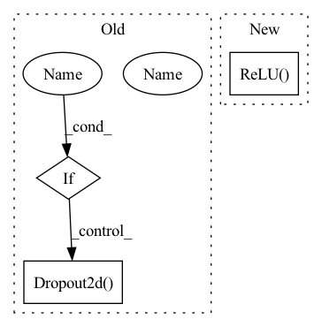

Pattern ID :694

Before Change
self.do1 = passthrough
self.relu1 = ELUCons(elu, outChans)
self.relu2 = ELUCons(elu, outChans)
if dropout:
self.do1 = nn.Dropout2d()
self.ops = _make_nConv2d(outChans, nConvs, elu)
def forward(self, x):
After Change
super(DownTransition2d, self).__init__()
self.down_conv = nn.Conv2d(inChans, outChans, kernel_size=2, stride=2)
self.bn1 = nn.GroupNorm(8, outChans)
self.relu1 = nn.ReLU(inplace=True)
self.ops = _make_nConv2d(outChans, nConvs)
def forward(self, x):
In pattern: SUPERPATTERN
Frequency: 3
Non-data size: 3
Instances
Fragment ID: 1656625
Project Name: junqiangchen/pytorchdeeplearing
Commit Name: e46edd9af5aee29ef03640c2c17f8f480a4c5168
Time: 2022-07-26
Author: 1207173174@qq.com
File Name: networks/ResNet2d.py
Class Name: DownTransition2d
Method Name: __init__
Parent Class: nn.Module
Fragment ID: 1656626
Project Name: junqiangchen/pytorchdeeplearing
Commit Name: e46edd9af5aee29ef03640c2c17f8f480a4c5168
Time: 2022-07-26
Author: 1207173174@qq.com
File Name: networks/VNet2d.py
Class Name: DownTransition2d
Method Name: __init__
Parent Class: nn.Module
Fragment ID: 1656628
Project Name: junqiangchen/pytorchdeeplearing
Commit Name: e46edd9af5aee29ef03640c2c17f8f480a4c5168
Time: 2022-07-26
Author: 1207173174@qq.com
File Name: networks/VNet2d.py
Class Name: UpTransition2d
Method Name: __init__
Parent Class: nn.Module